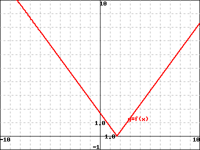
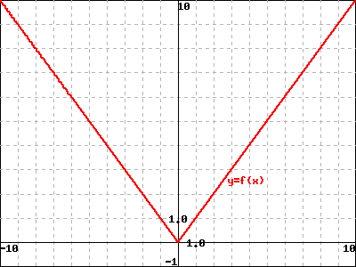
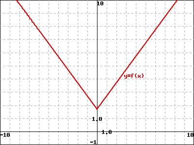
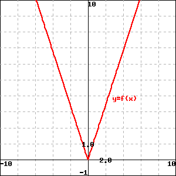
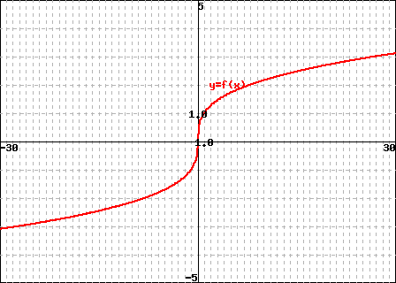
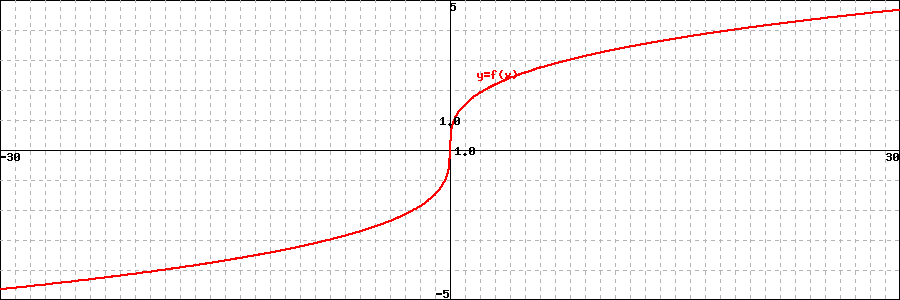
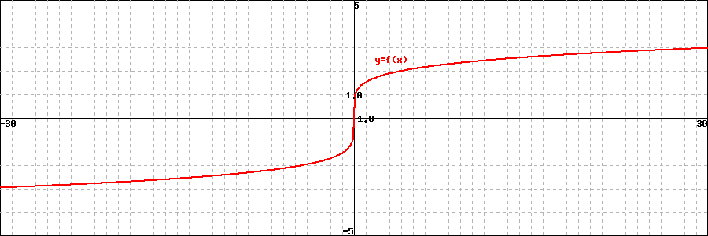
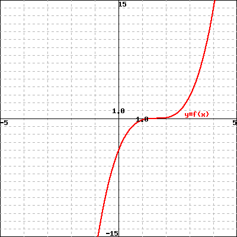

Chapter 22 15-graphs-of-basic-functions
Exercises Exercises
Use
\(f(x) = 2x^{2}-6x\)
to answer the following questions:
1. Is point \((-2, 21)\) on the graph of \(y = f(x)\text{?}\)
Your answer:
- No
- Yes
2. If \(x = 3\text{,}\) what is \(f(x)\) ? What point is on the graph of \(f\text{?}\)
\(f(x) =\) ,
the point on the graph is .
3. If \(f(x) = 8\text{,}\) what is \(x\text{?}\) What point(s) are on the graph of \(f\text{?}\)
\(x =\) ,
the point(s) on the graph are .
4. What is the domain of \(f\text{?}\)
The domain of \(f\) is
5. Find the \(y-\)intercepts of the graph of \(y = f(x)\text{.}\)
\(y-\) intercepts are at point(s)
6. Find the \(x-\) intercepts of the graph of \(y = f(x)\text{.}\)
\(x-\) intercepts are at point(s)
2. local/uw-stout/math120-sulvn-3-4/graph-abs-function.pg.
In this problem you will work on graphing function \(f(x) = |x|\text{.}\)
First you will find some points on the graph of \(y=|x|\)
| \(x\) | \(y\) |
| 0 | |
| 1 | |
| -1 | |
| 2 | |
| -2 | |
| 5 | |
| -5 | |
| 9 | |
| -9 |
Next you will plot the points you found above, and draw a line through the points.
Now, select the correct graph from the list below:
The graph of \(y = |x|\) matches...
- 
- 
- 
- 
3. local/uw-stout/math120-sulvn-3-4/graph-cube-root-function.pg.
In this problem you will work on graphing function \(f(x) = \sqrt[3]{x}\text{.}\)
First you will find some points on the graph of \(y=\sqrt[3]{x}\)
| \(x\) | \(y\) |
| 0 | |
| 1 | |
| -1 | |
| 5 | |
| -5 | |
| 8 | |
| -8 | |
| 15 | |
| -15 | |
| 27 | |
| -27 |
Next you will plot the points you found above, and draw a line through the points.
Now, select the correct graph from the list below:
The graph of \(y = \sqrt[3]{x}\) matches...
- 

- 
- 
4. local/uw-stout/math120-sulvn-3-4/graph-cubic-function.pg.
In this problem you will work on graphing function \(f(x) = x^3\text{.}\)
First you will find some points on the graph of \(y=x^3\)
| \(x\) | \(y\) |
| 0 | |
| 1 | |
| -1 | |
| 2 | |
| -2 | |
| 3 | |
| -3 | |
| 4 | |
| -4 |
Next you will plot the points you found above, and draw a line through the points.
Now, select the correct graph from the list below:
The graph of \(y = x^3\) matches...
- 


5. local/uw-stout/math120-sulvn-3-4/graph-square-function.pg.
In this problem you will work on graphing function \(f(x) = x^2\text{.}\)
First you will find some points on the graph of \(y=x^2\)
| \(x\) | \(y\) |
| 0 | |
| 1 | |
| -1 | |
| 2 | |
| -2 | |
| 3 | |
| -3 | |
| 4 | |
| -4 |
Next you will plot the points you found above, and draw a line through the points.
Now, select the correct graph from the list below:
The graph of \(y = x^2\) matches...


6. local/uw-stout/math120-sulvn-3-4/graph-square-root-function.pg.
In this problem you will work on graphing function \(f(x) = \sqrt{x}\text{.}\)
First you will find some points on the graph of \(y=\sqrt{x}\)
| \(x\) | \(y\) |
| 0 | |
| 1 | |
| 4 | |
| 5 | |
| 9 | |
| 10 | |
| 15 | |
| 16 |
Next you will plot the points you found above, and draw a line through the points.
Now, select the correct graph from the list below:
The graph of \(y = \sqrt{x}\) matches...


7. local/Library/Utah/College_Algebra/set6_Polynomial_and_Rational_Functions/1050s6p7/1050s6p7.pg.

The Figure above shows the graph of the mystery function \(y = f(x)\text{.}\)
In the Figure below, match the colors of the graphs in this Figure with the functions given. Enter y for yellow, b for blue, r red,and g for green, as appropriate.

A. \(y = f(x) +2\)
B. \(y = f(x)-2\)
C. \(y = f(x+2)\)
D. \(y = f(x-2)\)